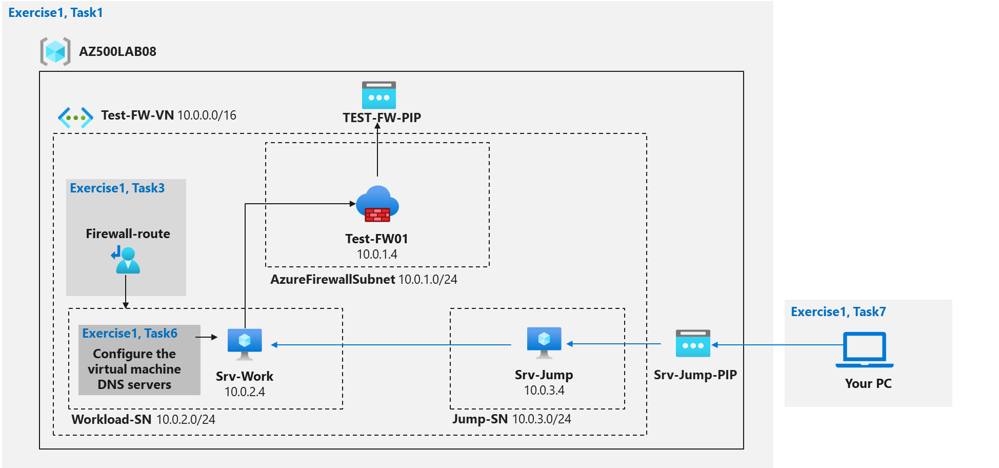

Lab 08: Azure Firewall
Student lab manual
Lab scenario
You have been asked to install Azure Firewall. This will help your organization control inbound and outbound network access which is an important part of an overall network security plan. Specifically, you would like to create and test the following infrastructure components:
- A virtual network with a workload subnet and a jump host subnet.
- A virtual machine is each subnet.
- A custom route that ensures all outbound workload traffic from the workload subnet must use the firewall.
- Firewall Application rules that only allow outbound traffic to www.bing.com.
- Firewall Network rules that allow external DNS server lookups.
For all the resources in this lab, we are using the East US region. Verify with your instructor this is the region to use for class.
Lab objectives
In this lab, you will complete the following exercise:
- Exercise 1: Deploy and test an Azure Firewall
Azure Firewall diagram

Instructions
Lab files:
- \Allfiles\Labs\08\template.json
Exercise 1: Deploy and test an Azure Firewall
Estimated timing: 40 minutes
For all the resources in this lab, we are using the East (US) region. Verify with your instructor this is region to use for you class.
In this exercise, you will complete the following tasks:
- Task 1: Use a template to deploy the lab environment.
- Task 2: Deploy an Azure firewall.
- Task 3: Create a default route.
- Task 4: Configure an application rule.
- Task 5: Configure a network rule.
- Task 6: Configure DNS servers.
- Task 7: Test the firewall.
Task 1: Use a template to deploy the lab environment.
In this task, you will review and deploy the lab environment.
In this task, you will create a virtual machine by using an ARM template. This virtual machine will be used in the last exercise for this lab.
-
Sign-in to the Azure portal
https://portal.azure.com/.Note: Sign in to the Azure portal using an account that has the Owner or Contributor role in the Azure subscription you are using for this lab.
-
In the Azure portal, in the Search resources, services, and docs text box at the top of the Azure portal page, type Deploy a custom template and press the Enter key.
-
On the Custom deployment blade, click the Build your own template in the editor option.
-
On the Edit template blade, click Load file, locate the \Allfiles\Labs\08\template.json file and click Open.
Note: Review the content of the template and note that it deploys an Azure VM hosting Windows Server 2016 Datacenter.
-
On the Edit template blade, click Save.
-
On the Custom deployment blade, ensure that the following settings are configured (leave any others with their default values):
Setting Value Subscription the name of the Azure subscription you will be using in this lab Resource group click Create new and type the name AZ500LAB08 Location (US) East US Note: To identify Azure regions where you can provision Azure VMs, refer to https://azure.microsoft.com/en-us/regions/offers/
-
Click Review + create, and then click Create.
Note: Wait for the deployment to complete. This should take about 2 minutes.
Task 2: Deploy the Azure firewall
In this task you will deploy the Azure firewall into the virtual network.
-
In the Azure portal, in the Search resources, services, and docs text box at the top of the Azure portal page, type Firewalls and press the Enter key.
-
On the Firewalls blade, click + Create.
-
On the Basics tab of the Create a firewall blade, specify the following settings (leave others with their default values):
Setting Value Resource group AZ500LAB08 Name Test-FW01 Region (US) East US Firewall SKU Standard Firewall management Use Firewall rules (classic) to manage this firewall Choose a virtual network click the Use existing option and, in the drop-down list, select Test-FW-VN Public IP address clck Add new and type the name TEST-FW-PIP and click OK -
Click Review + create and then click Create.
Note: Wait for the deployment to complete. This should take about 5 minutes.
-
In the Azure portal, in the Search resources, services, and docs text box at the top of the Azure portal page, type Resource groups and press the Enter key.
-
On the Resource groups blade, in the list of resource group, click the AZ500LAB08 entry.
Note: On the AZ500LAB08 resource group blade, review the list of resources. You can sort by Type.
-
In the list of resources, click the entry representing the Test-FW01 firewall.
-
On the Test-FW01 blade, identify the Private IP address that was assigned to the firewall.
Note: You will need this information in the next task.
Task 3: Create a default route
In this task, you will create a default route for the Workload-SN subnet. This route will configure outbound traffic through the firewall.
-
In the Azure portal, in the Search resources, services, and docs text box at the top of the Azure portal page, type Route tables and press the Enter key.
-
On the Route tables blade, click + Create.
-
On the Create route table blade, specify the following settings:
Setting Value Resource group AZ500LAB08 Region East US Name Firewall-route -
Click Review + create, then click Create, and wait for the provisioning to complete.
-
On the Route tables blade, click Refresh, and, in the list of route tables, click the Firewall-route entry.
-
On the Firewall-route blade, in the Settings section, click Subnets and then, on the Firewall-route | Subnets blade, click + Associate.
-
On the Associate subnet blade, specify the following settings:
Setting Value Virtual network Test-FW-VN Subnet Workload-SN Note: Ensure the Workload-SN subnet is selected for this route, otherwise the firewall won’t work correctly.
-
Click OK to associate the firewall to the virtual network subnet.
-
Back on the Firewall-route blade, in the Settings section, click Routes and then click + Add.
-
On the Add route blade, specify the following settings:
| Setting | Value |
|---|---|
| Route name | FW-DG |
| Address prefix destination | IP Address |
| Destination IP addresses/CIDR ranges | 0.0.0.0/0 |
| Next hop type | Virtual appliance |
| Next hop address | the private IP address of the firewall that you identified in the previous task |
>**Note**: Azure Firewall is actually a managed service, but virtual appliance works in this situation.
- Click Add to add the route.
Task 4: Configure an application rule
In this task you will create an application rule that allows outbound access to www.bing.com.
-
In the Azure portal, navigate back to the Test-FW01 firewall.
-
On the Test-FW01 blade, in the Settings section, click Rules (classic).
-
On the Test-FW01 | Rules (classic) blade, click the Application rule collection tab, and then click + Add application rule collection.
-
On the Add application rule collection blade, specify the following settings (leave others with their default values):
Setting Value Name App-Coll01 Priority 200 Action Allow -
On the Add application rule collection blade, create a new entry in the Target FQDNs section with the following settings (leave others with their default values):
Setting Value name AllowGH Source type IP Address Source 10.0.2.0/24 Protocol port http:80, https:443 Target FQDNS www.bing.com -
Click Add to add the Target FQDNs-based application rule.
Note: Azure Firewall includes a built-in rule collection for infrastructure FQDNs that are allowed by default. These FQDNs are specific for the platform and can’t be used for other purposes.
Task 5: Configure a network rule
In this task, you will create a network rule that allows outbound access to two IP addresses on port 53 (DNS).
-
In the Azure portal, navigate back to the Test-FW01 | Rules (classic) blade.
-
On the Test-FW01 | Rules (classic) blade, click the Network rule collection tab and then click + Add network rule collection.
-
On the Add network rule collection blade, specify the following settings (leave others with their default values):
Setting Value Name Net-Coll01 Priority 200 Action Allow -
On the Add network rule collection blade, create a new entry in the IP Addresses section with the following settings (leave others with their default values):
Setting Value Name AllowDNS Protocol UDP Source type IP address Source Addresses 10.0.2.0/24 Destination type IP address Destination Address 209.244.0.3,209.244.0.4 Destination Ports 53 -
Click Add to add the network rule.
Note: The destination addresses used in this case are known public DNS servers.
Task 6: Configure the virtual machine DNS servers
In this task, you will configure the primary and secondary DNS addresses for the virtual machine. This is not a firewall requirement.
-
In the Azure portal, navigate back to the AZ500LAB08 resource group.
-
On the AZ500LAB08 blade, in the list of resources, click the Srv-Work virtual machine.
-
On the Srv-Work blade, in the Settings section, click Networking.
-
On the Srv-Work | Networking blade, click the link next to the Network interface entry.
-
On the network interface blade, in the Settings section, click DNS servers, select the Custom option, add the two DNS servers referenced in the network rule: 209.244.0.3 and 209.244.0.4, and click Save to save the change.
-
Return to the Srv-Work virtual machine page.
Note: Wait for the update to complete.
Note: Updating the DNS servers for a network interface will automatically restart the virtual machine to which that interface is attached, and if applicable, any other virtual machines in the same availability set.
Task 7: Test the firewall
In this task, you will test the firewall to confirm that it works as expected.
-
In the Azure portal, navigate back to the AZ500LAB08 resource group.
-
On the AZ500LAB08 blade, in the list of resources, click the Srv-Jump virtual machine.
-
On the Srv-Jump blade, click Connect and, in the drop down menu, click RDP.
-
Click Download RDP File and use it to connect to the Srv-Jump Azure VM via Remote Desktop. When prompted to authenticate, provide the following credntials:
Setting Value User name localadmin Password Pa55w.rd1234 Note: The following steps are performed in the Remote Desktop session to the Srv-Jump Azure VM.
Note: You will connect to the Srv-Work virtual machine. This is being done so we can test the ability to access the bing.com website.
-
Within the Remote Desktop session to Srv-Jump, right-click Start, in the right-click menu, click Run, and, from the Run dialog box, run the following to connect to Srv-Work.
mstsc /v:Srv-Work -
When prompted to authenticate, provide the following credentials:
Setting Value User name localadmin Password Pa55w.rd1234 Note: Wait for the Remote Desktop session to be established and the Server Manager interface to load.
-
Within the Remote Desktop session to Srv-Work, in Server Manager, click Local Server and then click IE Enhanced Security Configuration.
-
In the Internet Explorer Enhanced Security Configuration dialog box, set both options to Off and click OK.
-
Within the Remote Desktop session to Srv-Work, start Internet Explorer and browse to
https://www.bing.com.Note: The website should successfully display. The firewall allows you access.
-
Browse to
http://www.microsoft.com/Note: Within the browser page, you should receive a message with text resembling the following:
HTTP request from 10.0.2.4:xxxxx to microsoft.com:80. Action: Deny. No rule matched. Proceeding with default action.This is expected, since the firewall blocks access to this website. -
Terminate both Remote Desktop sessions.
Result: You have successfully configured and tested the Azure Firewall.
Clean up resources
Remember to remove any newly created Azure resources that you no longer use. Removing unused resources ensures you will not incur unexpected costs.
-
In the Azure portal, open the Cloud Shell by clicking the first icon in the top right of the Azure Portal. If prompted, click PowerShell and Create storage.
-
Ensure PowerShell is selected in the drop-down menu in the upper-left corner of the Cloud Shell pane.
-
In the PowerShell session within the Cloud Shell pane, run the following to remove the resource group you created in this lab:
Remove-AzResourceGroup -Name "AZ500LAB08" -Force -AsJob -
Close the Cloud Shell pane.